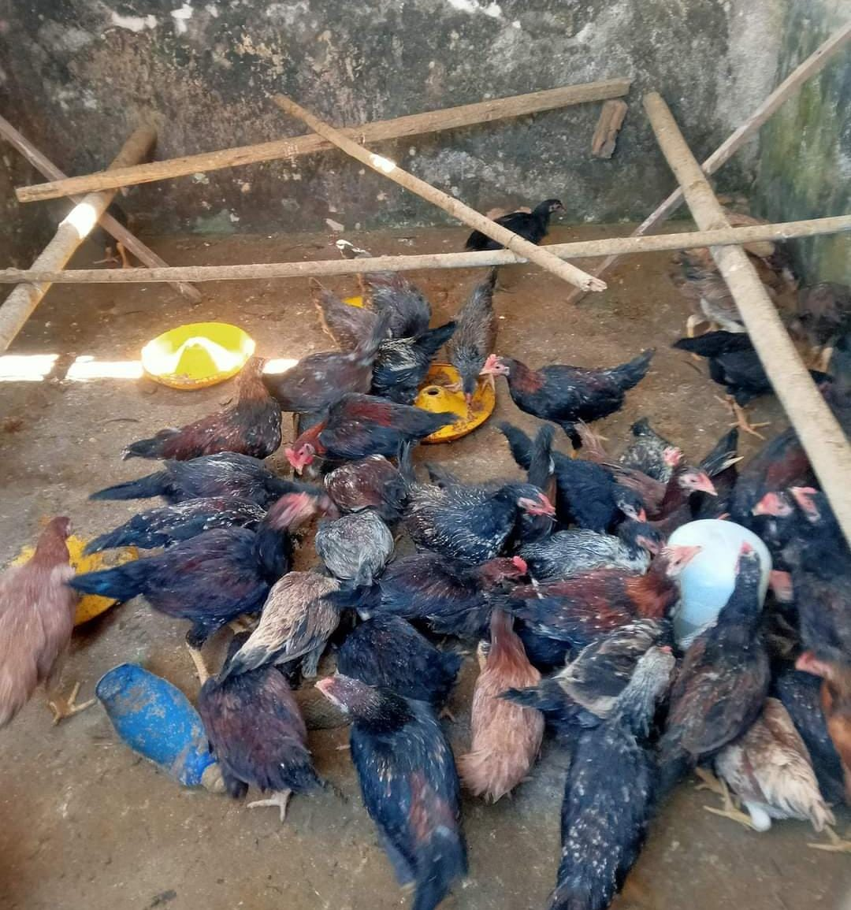

1. Ternak Domba: Kualitas dan Produktivitas Unggul
Peternakan Simekar memiliki kandang domba yang dirancang dengan sistem pemeliharaan intensif. Jenis domba yang dibudidayakan meliputi domba Garut dan domba Texel.
2. Ternak Ayam: Fokus pada Ayam Pedaging dan Petelur
Sektor unggas di Simekar meliputi peternakan ayam pedaging dan ayam petelur. Ayam broiler dan ayam petelur unggulan dibudidayakan untuk memenuhi permintaan pasar.
3. Ternak Bebek: Menghasilkan Daging dan Telur Berkualitas
Peternakan bebek Simekar berkembang pesat dengan jenis bebek Peking dan Mojosari yang memiliki kualitas daging dan produksi telur yang tinggi.
4. Perikanan: Budidaya Ikan Air Tawar
Unit perikanan Simekar membudidayakan ikan nila, lele, dan gurame dengan sistem bioflok yang modern.